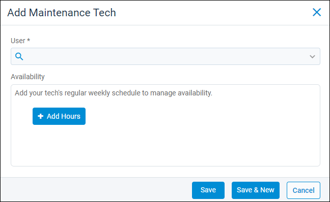
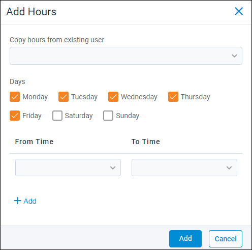

Source: https://rmxhelp.rentmanager.com/Topics/Express/Other/Maintenance-Add-Techs.htm
Add Maintenance Techs
With the Maintenance Schedule feature, you can add users as maintenance technicians who can be booked for service appointments. You can also set the hours that your techs are available to work, including adding time off.
More Information
The Maintenance Schedule feature is licensed and must be purchased separately. However, a license is not required to use the Maintenance Techs page. Additionally, if you are licensed for rmAppSuite Pro, users added to this page have access to the application's Service feature. For more information, contact your sales representative at sales@rentmanager.com.
Related Privileges
| Group | Privilege | Column |
|---|---|---|
| Service Manager | Maintenance Techs | Add, View |
For more information, refer to Control User Access.
Step 1: Add a User as a Maintenance Tech
You can add any Rent Manager user accounts as maintenance techs to make them available for scheduling service appointments via the Maintenance Schedule feature.
To add users as maintenance techs, do the following:
-
Go to
 arrow_forward Services arrow_forward
arrow_forward Services arrow_forward  Service Setup arrow_forward Service Manager arrow_forward Maintenance Techs.
Service Setup arrow_forward Service Manager arrow_forward Maintenance Techs.
The Maintenance Techs page displays. -
Click
 Add Maintenance Tech.
Add Maintenance Tech.
-
In the User drop-down, select a Rent Manager user account to add as a maintenance tech.
Step 2: Add Availability
After you select a user to add as a maintenance tech, you must add the days and hours of their work schedule. You can add the same hours to all of the tech's available days as one batch, or you can choose different hours for each day.
To add availability hours for a maintenance tech, do the following:
-
Click
 Add Hours.
Add Hours.
-
Optionally, select a user from the Copy hours from existing user drop-down list to duplicate the days and hours to this user's schedule.
-
In the Days field, check the days for which the hours selected in the From Time and To Time fields apply.
-
In the From Time field, select the time at which the tech's availability begins on the days checked in the Days field.
-
In the To Time field, select the time at which the tech's availability ends on the days checked in the Days field.
-
Optionally, click
Add to add additional hours. For example, if the tech is scheduled for different hours on Mondays and Tuesdays, you can first set hours for Mondays, then click Add to set different hours for Tuesdays. -
When finished adding hours, click Add.
-
Click Save to complete the maintenance tech creation process and close the pop-up. Alternatively, click Save & New to finish adding the maintenance tech and refresh the pop-up to add another maintenance tech.
The maintenance tech's hours are added to the Hours tab and also display on the Maintenance Schedule page.